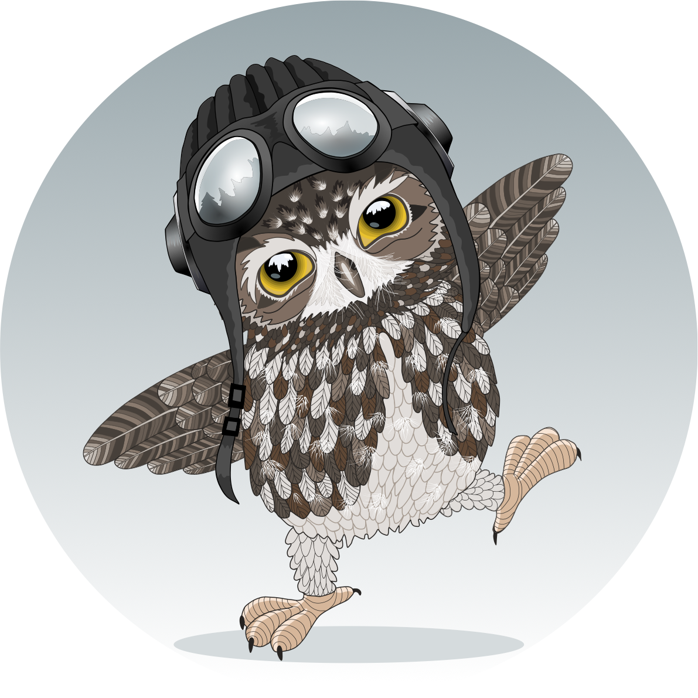

JavaScript Game
My version of flappy bird, inspired by Harvard's CS50 game course. I converted base code from Lua to Javascript and implemented several new features and designs.
Problem: Static procedural generation of pipes. Solution: Randomized the gap between pipes and randomize time to spawn
Problem: Unable to pause game play. Solution: Implemented a pause state when the user pressed the p-key.
Problem: Original game awarded medals for high scores. Solution: Implemented ability to earn bronze, gold, and silver medals for high scores.
Problem: No animation. Solution: Utilized a sprite sheet to create flying animation and dizzy animation when owl collides.
Problem: Background uninteresting. Solution: random procedural generation of clouds, created multiple background elements(hills, small mountains, large mountains, clouds) that scroll at different rates.